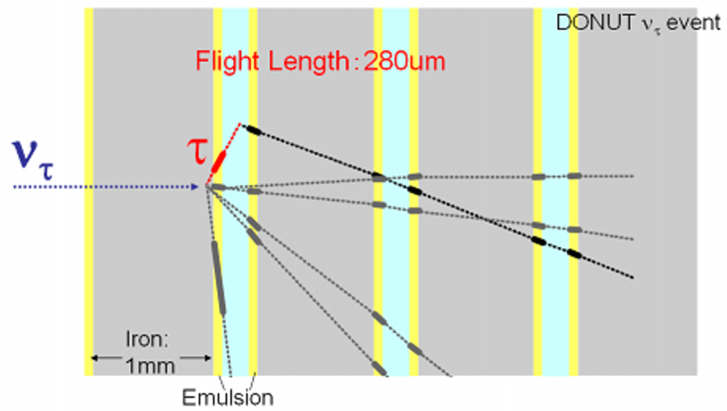
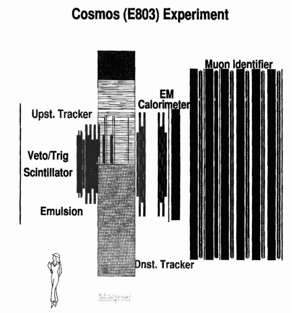

Neutrino interaction phenomenology
The GENIE collaboration provides a well-known neutrino event generator used by all neutrino experiments, associated charged lepton-nucleus and hadron-nucleus event generators, and event generators for several BSM channels accessible in intensity frontier experiments. It maintains a modern event generation framework for neutrino experiments, and several analysis-related tools and experimental interfaces (such as flux and geometry navigation drivers for building realistic simulations with off-the-shelf components). GENIE also develops the leading global analysis of neutrino scattering data for the derivation of improved physics tunes and data-driven evaluation of modelling uncertainties. GENIE maintains large curated archives of relevant neutrino, electron and hadron scattering data and corresponding data/MC comparison tools, as well as state-of-the-art tuning machinery.
My effort is currently focussed on further development of the GENIE global analysis, amalgamating the best theory and all available measurements into predictive semi-empirical comprehensive model of neutrino interaction physics.
Some research outputs (codes and papers) can be found below:
-
The code repositories for all GENIE products are hosted in the
official GENIE GitHub organization.
Amongst others, it includes our main
Generator,
Reweight,
Comparisons
(
 ),
Tuning
(), and
Prof-GENIE
() products.
(Special permissions are required for the products listed with a .)
),
Tuning
(), and
Prof-GENIE
() products.
(Special permissions are required for the products listed with a .)
- Information about the origins of the GENIE project can be found in our historic Nucl.Instrum.Meth.A614 (2010) 87-104 paper, with well over 1,100 citations to date.
- Recent developments on the GENIE event generator are outlined in Eur.Phys.J.ST 230 (2021) 24, 4449-4467.
- The latest version of the GENIE Physics and User manual can be found in Overleaf (please cite as arXiv:1510.054941[hep-ph] though the version posted on arXiv needs to be revised)
- Recent outputs of our evolving GENIE global analysis may be found in a) Phys.Rev.D 104 (2021) 7, 072009, b) Phys.Rev.D 105 (2022) 1, 012009, and c) Phys.Rev.D 106 (2022) 11, 112001. All three tuning papers were produced as part of the doctoral work of Julia Tena-Vidal at Liverpool.
Physics exploitation of current neutrino experiments
I work in the modelling of atmospheric neutrino interactions using GENIE, as well as in ML-based atmospheric neutrinmo event reconstruction and the incorporation of atmospheric event samples in a VALOR-based 3-flavour oscillation analysis. The Liverpool group is also particularly interested in dark sector searches using JUNO.
I am the Liverpool PI for SBN and SBND, and I have served as a member of the SBND Executive Committee (2020-2023), SBND Physics co-Coordinator (2017-2023), and Systematics & Oscillation Sensitivity WG co-Coordinator (2018-2022) for the overall SBN program.
Our group focuses on the development of SBN physics simulations, the development of a VALOR-based simultaneous sterile neutrino oscillation and systematics constraint fit exploiting the power of exclusive samples and the SBND-PRISM concept, as well as preparations for SBND neutrino cross-section measurements of unprecedented precision.
I have supervised a number of SBN/SBND doctoral theses:
-
(10/2021 - present)
Doctoral thesis of Ms. Beth Slater (University of Liverpool)
Thesis: `Neutrino Flux and Interaction Systematic Constraints for the SBN Sterile Neutrino Oscillation Search from a Joint Analysis of Exclusive Topological Event Samples on SBND and the Utilization of the SBND PRISM Capabilities'. - (10/2018 - 05/2023) Doctoral thesis of Dr. Thomas Ham (University of Liverpool) Thesis: `New Physics Searches with Single Electromagnetic Shower Events at the Fermilab Short Baseline Neutrino Program.'
-
(10/2016 - 09/2021)
Doctoral thesis of Dr. Rhiannon Jones (University of Liverpool)
Thesis: `Muon-Neutrino Disappearance with Multiple Liquid Argon Time Projecton Chambers in the Fermilab Booster Neutrino Beam'
Previous work on neutrino experiments
Some of my T2K research outputs can be found below:
While I was active on T2K, I co-authored the following VALOR/T2K oscillation analyses and technical notes for various T2K datasets [*]. (VALOR contributions to published papers are also indicated):
-
2010 (Run 1) 2-flavour νμ disappearance analysis
→ Documented in technical note: T2K/TN-036 -
2010 (Run 1-2) 2-flavour νμ disappearance analysis
→ Documented in technical note: T2K/TN-064
→ Contributed to: Phys.Rev. D85 (2012) 031103 -
2010 (Run 1-2) 3-flavour νμ disappearance analysis
→ Documented in technical note: T2K/TN-087 -
2012 (Run 1-3) 3-flavour νμ disappearance analysis
→ Documented in technical note: T2K/TN-141
→ Contributed to: Phys.Rev.Lett. 111 (2013) 211803 and Phys.Rev.Lett. 112 (2014) 061802 -
2012 (Run 1-3) 3-flavour joint
νμ disappearance + νe appearance analysis
→ Documented in technical note: T2K/TN-154 -
2013 (Run 1-4a) 3-flavour νμ disappearance analysis
→ Documented in technical note: T2K/TN-155 -
2013 (Run 1-4) 3-flavour νμ disappearance analysis
→ Documented in technical note: T2K/TN-183
→ Contributed to: Phys.Rev.Lett. 112 (2014) 181801 -
2013 (Run 1-4) 3-flavour joint
νμ disappearance + νe appearance analysis
→ Documented in technical note: T2K/TN-175
→ Contributed to: Phys.Rev. D91 (2015) 072010 -
2015 (Run 5-6) 3-flavour
νμ
disappearance analysis
→ Documented in technical note: T2K/TN-243
→ Contributed to: Phys.Rev.Lett. 116 (2016) 181801 -
2015 (Run 5-6)
νe
appearance analysis
→ Documented in technical note: T2K/TN-252 -
2016 (Run 1-6 / Run 1-7)
νe
appearance analysis
→ Documented in technical note: T2K/TN-296 -
2016 (Run 1-6 / Run 1-7) 3-flavour
νμ / νμ
disappearance analysis
→ Documented in technical note: T2K/TN-302 Phys.Rev. D96 (2017) no.1, 011102 -
2016 (Run 1-6 / Run 1-7) 3-flavour joint
νμ / νμ disappearance +
νe / νe appearance analysis
using standard single-ring e-like and μ-like samples in neutrino and antineutrino beam modes (4 samples)
→ Documented in technical note: T2K/TN-266
→ Contributed to: Phys.Rev.Lett. 118 (2017) no.15, 151801 -
2016 (Run 1-6 / Run 1-7) 3-flavour joint
νμ / νμ disappearance +
νe / νe appearance analysis
with additional (5th) νe CC1π+ event sample
→ Documented in technical note: T2K/TN-306
→ Contributed to: Phys.Rev. D96 (2017) no.9, 092006 -
2017 (Run 1-8) 3-flavour joint (5 sample)
νμ / νμ disappearance +
νe / νe appearance analysis
→ Documented in technical note: T2K/TN-327
→ Contributed to: Phys.Rev.Lett. 121 (2018) no.17, 171802 -
2018 (Run 1-9)
νe
appearance analysis
→ Documented in technical note: T2K/TN-356
→ Contributed to: Phys. Rev. Lett. 124, 161802 (2020) -
2018 (Run 1-9) 3-flavour joint (5 sample)
νμ / νμ disappearance +
νe / νe appearance analysis
→ Documented in technical note: T2K/TN-360
→ Contributed to: Nature 580, 339–344 (2020) and Phys.Rev.D 103 (2021) 11, 112008 -
2020 (Run 1-10) 3-flavour joint (5 sample)
νμ / νμ disappearance +
νe / νe appearance analysis
→ Documented in technical note: T2K/TN-394
Our codes to reproduce all analyses listed above can be found online in the official VALOR GitHub organization. (Special permissions are required for the products listed with a
-
The experiment-agnostic VALOR analysis framework can be found in the
VALOR-SDK
() repository
-
T2K-specific configurations and scripts can be found in the
VALOR-T2K
() repository.
During my time on T2K, I supervised a number of excellent T2K doctoral theses:
-
(10/2019 - present)
Doctoral thesis of Mr. Jaiden Parlone (University of Liverpool)
Co-supervisor: Davide Sgalaberna (ETHZ) -
(10/2016 - 02/2022)
Doctoral thesis of Dr. Francis Bench (University of Liverpool)
Co-supervisor: Neil McCauley (University of Liverpool)
Thesis: `Study of Neutrino and Anti-Neutrino Oscillations in the 3-Flavour PMNS Paradigm at the T2K Experiment: Constraints on the Charge-Parity Invariance Violating Phase and Search for Electron Anti-Neutrino Appearance' -
(10/2014 - 12/2018)
Doctoral thesis of Dr. Christopher Barry (University of Liverpool)
Co-supervisor: Christos Touramanis (University of Liverpool)
Thesis: `Joint Analysis of Neutrino and Antineutrino Data from the T2K Experiment and Indications for Charge-Parity (CP) Violation' -
(10/2011 - 10/2015)
Doctoral thesis of Dr. Steve Dennis (University of Warwick and STFC/RAL)
Co-supervisor: Steve Boyd and Gary Barker (University of Warwick)
Thesis: `Muon Antineutrino Disappearance and Non-Standard Interactions at the T2K Experiment' -
(10/2011 - 12/2014)
Doctoral thesis of Dr. Lorena Escudero (CSIC and University of Valencia)
Co-supervisor: Anselmo Cervera (IFIC Valencia)
Thesis: `Joint Analysis of Three Flavour Neutrino Oscillations Combining the Electron-Neutrino Appearance and Muon-Neutrino Disappearance Channels in the T2K Experiment' -
(10/2010 - 07/2014)
Doctoral thesis of Dr. Thomas Dealtry (University of Oxford and STFC/RAL)
Co-supervisor: Alfons Weber (University of Oxford)
Thesis: `Precise Measurement of Muon-Neutrino Disappearance in the T2K Experiment' -
(10/2008 - 12/2012)
Doctoral thesis of Dr. James Dobson (Imperial College)
Co-supervisor: Yoshi Uchida (Imperial College)
Thesis: `Neutrino-Induced Charged-Current π+ Production at the T2K Near Detector'
[*]
T2K collected data in several periods with different conditions and proton-on-target (POT) exposures,
both in neutrino-enhanced Forward Horn Current (FHC) and antineutrino-enhanced Reversed Horn Current (RHC) modes:
Run 1 (01-06/2010, FHC: 0.323x1020 POT),
Run 2 (10/2010-03/2011, FHC: 1.108x1020 POT),
Run 3 (03-06/2012, FHC: 1.579x1020 POT),
Run 4 (10/2012-05/2013, FHC: 3.560x1020 POT),
Run 5 (05-06/2014, FHC: 0.242x1020 POT and RHC: 0.506x1020 POT),
Run 6 (10/2014-06/2015, FHC: 0.190x1020 POT and RHC: 3.505x1020 POT),
Run 7 (02-05/2016, FHC: 0.480x1020 POT and RHC: 3.460x1020 POT),
Run 8 (10/2016-04/2017, FHC: 7.170x1020 POT),
Run 9 (10/2017-05/2018, FHC: 0.204x1020 POT and RHC: 8.788x1020 POT), and
Run 10 ().

DONUT Experiment (1997-2003)

COSMOS Experiment (1997-1998)
R&D for future neutrino experiments
In the past, I served as DUNE-UK Physics Coordinator (2014-2019) and participated in early Near Detector design efforts (NDTF). I developed end-to-end 3-flavour oscillation analyses based on VALOR for the derivation of physics-driven requirements for the experiment optimization.
Currently, my efforts on the Fermilab LArTPC program are directed mainly towards the SBN program, but I continue to coordinate and support development of GENIE, which is the primary physics simulation used by DUNE.